Référence main / proposition rejetée / intégration corrigée
Captures réelles. Les ressources externes bloquées par le proxy sont consignées dans captures.json ; les images absentes ne sont pas simulées.
reference — index.html — 1440 px
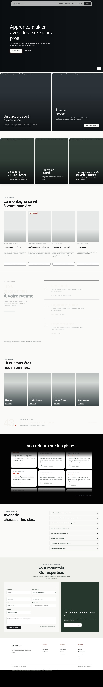
reference — index.html — 390 px
reference — manifesto.html — 1440 px
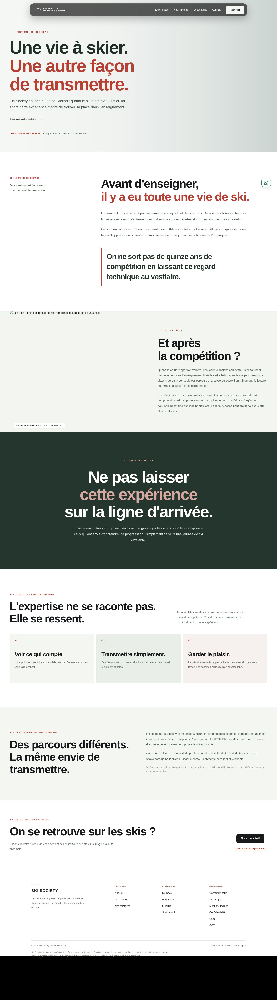
reference — manifesto.html — 390 px
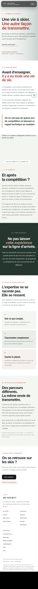
reference — offres/ski-prive.html — 1440 px
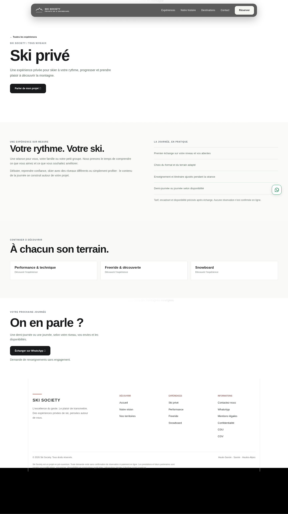
reference — offres/ski-prive.html — 390 px
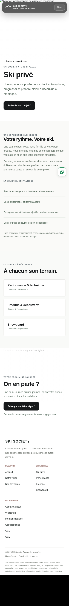
reference — stations.html — 1440 px
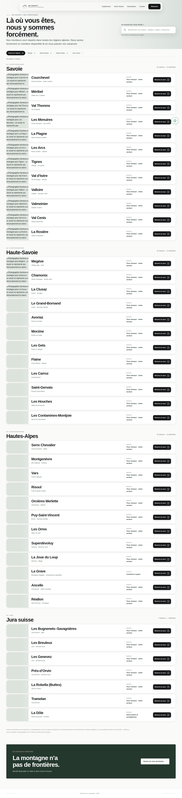
reference — stations.html — 390 px
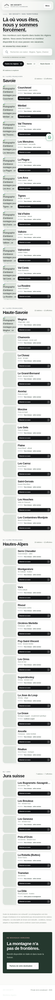
rejected — index.html — 1440 px
rejected — index.html — 390 px
corrected — manifesto.html — 1440 px

corrected — manifesto.html — 390 px

corrected — offres/ski-prive.html — 1440 px
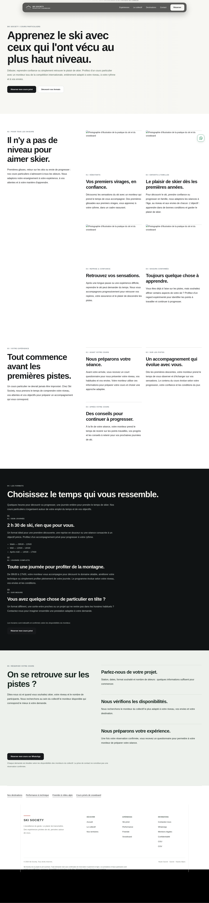
corrected — offres/ski-prive.html — 390 px
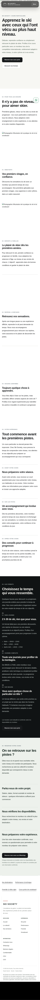
corrected — stations.html — 1440 px
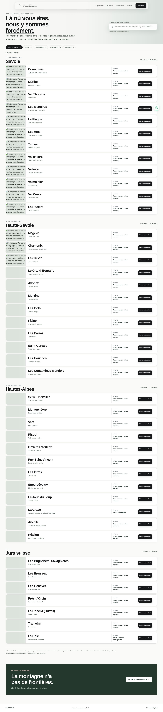
corrected — stations.html — 390 px
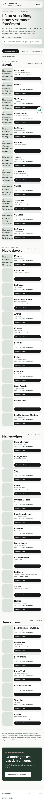
corrected — stations/courchevel.html — 1440 px
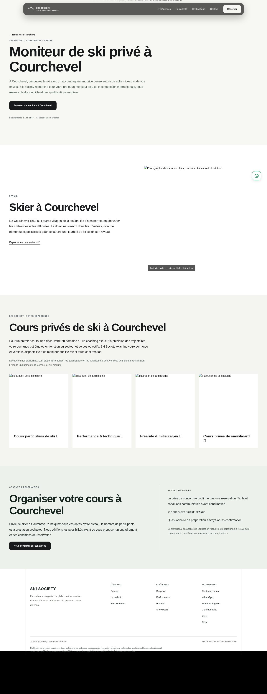
corrected — stations/courchevel.html — 390 px
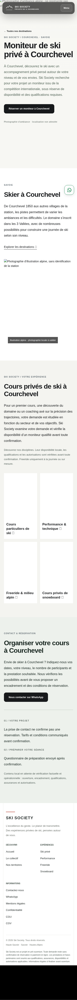
corrected — index.html — 1440 px

corrected — index.html — 390 px